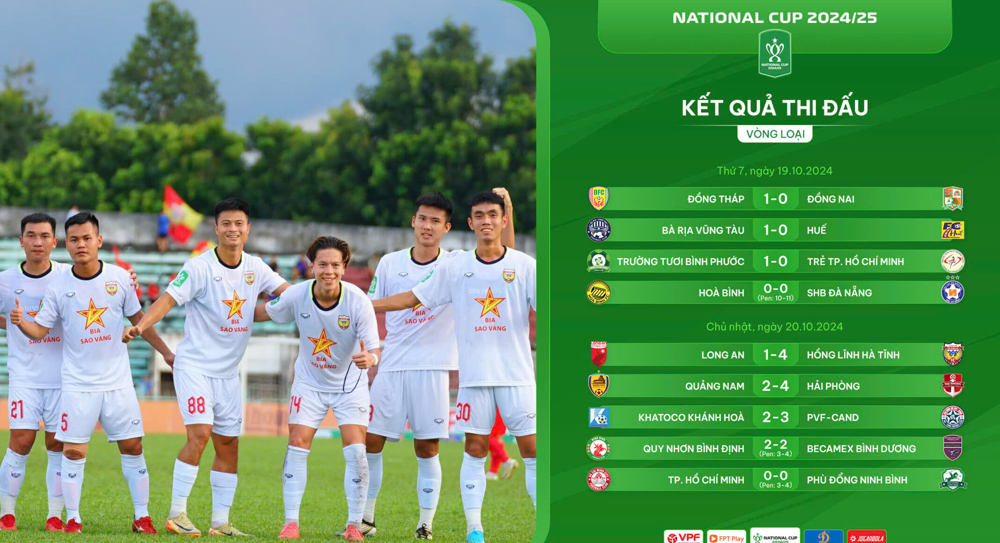
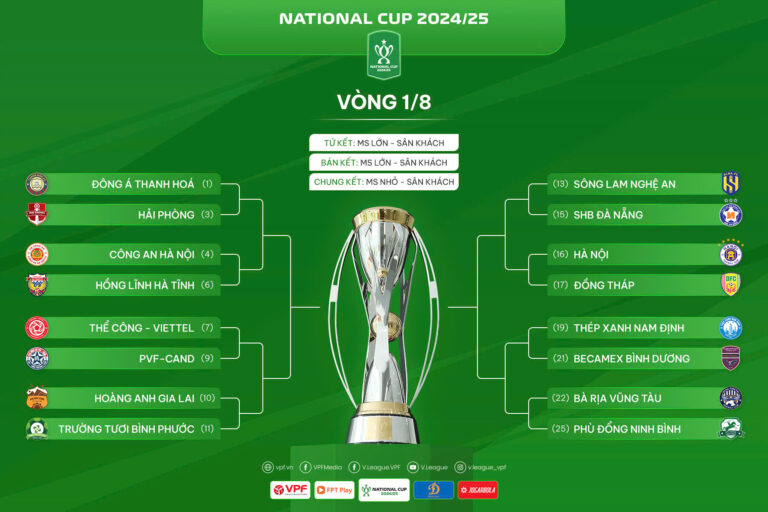

Vòng loại Cúp Quốc Gia 2024/25: Những bất ngờ đầu tiên
CLB Phù Đổng Ninh Bình tạo dấu ấn đầu tiên sau giai đoạn đầu tư rất mạnh mẽ với chiến thắng trước CLB TP.HCM tại vòng loại Cúp Quốc gia 2024/25. Các ứng viên đua tranh ở giải HNQG đều giành chiến thắng và được chờ đợi làm thêm những bất ngờ ở những vòng tiếp theo…

CLB TP.HCM – đội bóng tốp 4 V.League 1 mùa trước và không sử dụng ngoại binh
theo điều lệ giải, gặp đội bóng “ẩn số” Phù Đổng Ninh Bình. Đúng như dự đoán của
giới chuyên môn, đội bóng đang thi đấu tại giải hạng Nhất không dễ bị “bắt nạt” và khiến
đội chủ nhà phải nếm vị thất bại. Sau 90 phút giằng co và không có bàn thắng nào được ghi,
cả hai bước đến chấm 11m để quyết định thắng thua. Trên chấm cân não, Văn Lâm và các đồng
đội đã có chiến thắng 4-3 trước CLB TP.HCM.
Như vậy sau vòng loại, 3 ứng viên đua tranh chức vô địch của giải HNQG là Phù Đổng Ninh Bình, PVF-CAND và Trường Tươi Bình Phước đều đã thể hiện phần nào thực lực của mình sau thời gian đầu tư mạnh mẽ. CLB Trường Tươi Bình Phước vượt qua CLB Trẻ TP.HCM với bàn thắng duy nhất của Công Phượng. CLB PVF-CAND chiến thắng 3-2 ngay trên đất CLB Khatoco Khánh Hòa với các bàn thắng của những cái tên quen thuộc Xuân Nam, Công Đến… CLB Phù Đổng Ninh Bình vượt qua ngọn núi lớn CLB TP.HCM với cái tên Văn Lâm tỏa sáng ở loại 11m.
Ở vòng loại, lợi thế chủ nhà không mang đến chiến thắng cho nhiều đội bóng, mà ngược lại mang đến nụ cười cho đội khách. CLB Hải Phòng, CLB HL Hà Tĩnh, B.Bình Dương, SHB Đà Nẵng, CLB Phù Đổng Ninh Bình, PVF-CAND chứng minh điều đó. CLB HL Hà Tĩnh vượt qua đội chủ nhà Long An – với lực lượng đang trẻ hóa, bằng tỉ số 4-1. Trên sân Hòa Xuân, CLB Quảng Nam thua CLB Hải Phòng 2-4. CLB B.Bình Dương chiến thắng chủ nhà Quy Nhơn Bình Định trên chấm 11m, sau trận hòa 2-2. CLB PVF-CAND và Phù Đổng Ninh Bình chiến thắng như đã đề cập. Điều đó cho thấy tính chất bất ngờ thú vị luôn là điểm nhấn của Cúp QG.

Sức nóng của Cúp QG sẽ ngày càng tăng khi các đội bước tiếp vào vòng đầu tiếp theo. Hành trình tham vọng của các CLB hàng đầu giải hạng Nhất sẽ gặp nhiều thử thách. CLB Trường Tươi Bình Phước gặp CLB HAGL. CLB PVF-CAND gặp Thể Công – Viettel. CLB Phù Đổng Ninh Bình sáng cửa tiến vào sâu hơn khi đối thủ là CLB BR-VT. Chờ đợi những bất ngờ tiếp theo!